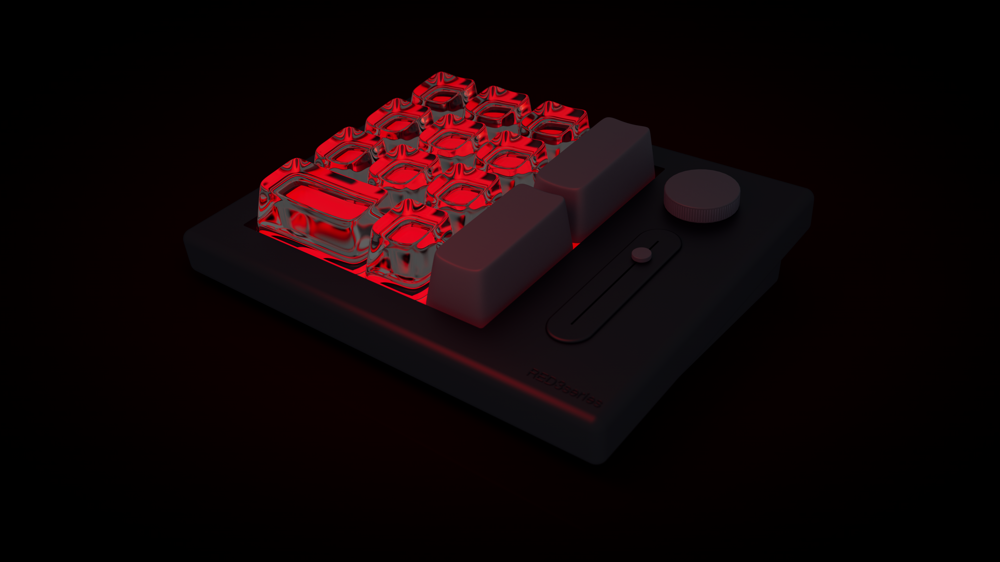
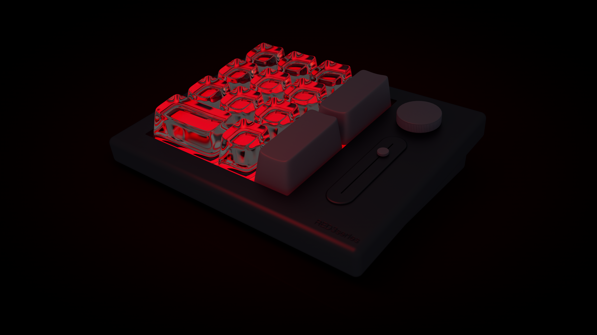
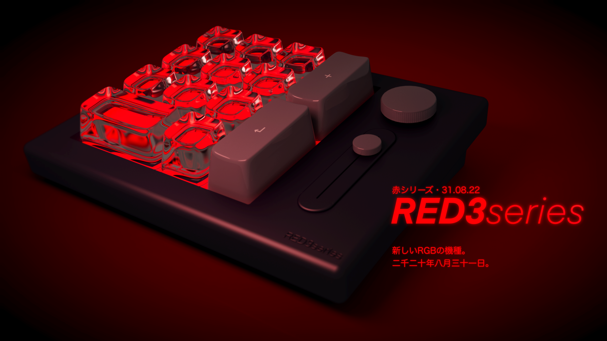
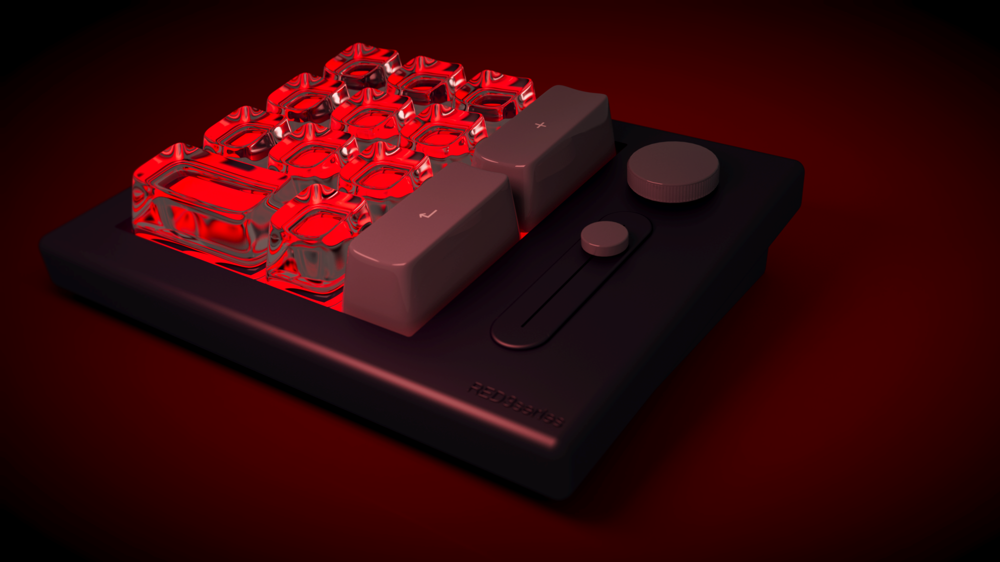

Numpad 3D Mockup
27 September 2022 | Cinema4D, 2K (3840 x 2160 px)
Prompt: recreate a "found object" in Cinema 4D and use in a campaign.
This was my first project using Cinema 4D software, and I used it as an opportunity to learn subdivision surfaces and experiment with luminous materials. The numpad's design is based off, but not an exact replica, of Glorious' GMMK Numpad.

Below, you can see the process: the basic model, adding luminosity and other materials, adding stickers, and then the final version (with and without text).
 



